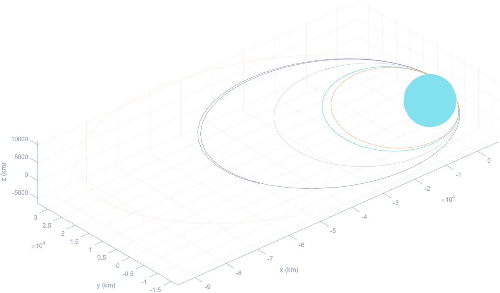
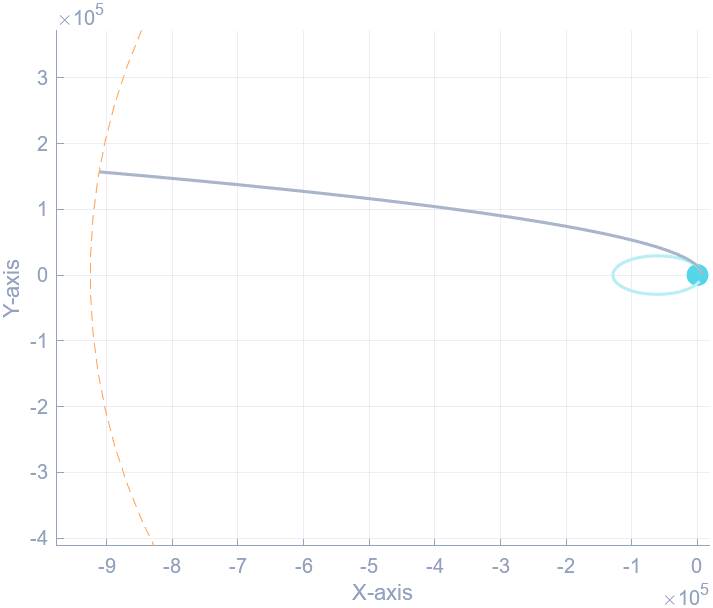
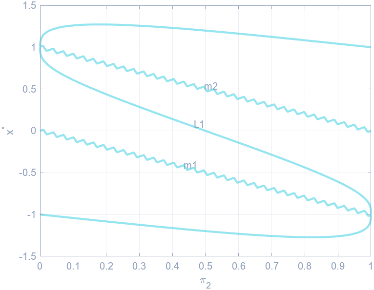
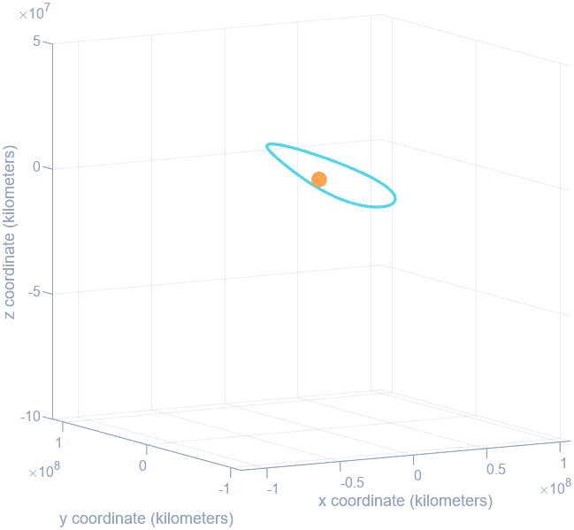

The mission
Aditya-L1 is India's first dedicated solar observatory. It carries seven payloads: four looking directly at the Sun, three measuring particles and fields in situ. It launched on 2 September 2023.
The reason it goes to L1 rather than to Earth orbit is uninterrupted view. A spacecraft near the first Sun–Earth Lagrange point sees the Sun continuously, with no occultation by the Earth, which makes it possible to watch coronal mass ejections and flare activity as they develop rather than in fragments.
This project reproduces that trajectory from the ground up: establish the parking orbit, raise it in stages, escape Earth's sphere of influence, find L1 numerically, pick a halo orbit around it, and patch the two halves of the journey together.
The parking orbit
The spacecraft is first placed in an elliptical orbit with a perigee radius of 235 km and an apogee radius of 19,500 km, inclined 19.2°, with an argument of perigee of 346.6°. Perigee velocity comes from the vis-viva equation:
Velocity at perigee is tangential, so in the perifocal frame the state is simply r = [rₚ, 0, 0] and v = [0, vₚ, 0]. Orienting that into the correct plane is two rotations, one for inclination and one for the argument of perigee:
Four burns at perigee
Indian launch vehicles cannot give a spacecraft escape velocity directly, so the orbit is built up instead. This is the slingshot technique, and it works because of the Oberth effect: the most efficient place to change velocity is the point of an orbit where you are already moving fastest, which for an ellipse is perigee.
So the same burn point is used four times over, each one raising apogee further:
| Stage | Perigee | Apogee |
|---|---|---|
| Initial | 235 km | 19,500 km |
| Burn 1 | 245 km | 22,459 km |
| Burn 2 | 282 km | 40,225 km |
| Burn 3 | 296 km | 71,767 km |
| Burn 4 | 256 km | 121,973 km |

Leaving Earth behind
To escape a planet's gravity the spacecraft has to be on a hyperbolic trajectory relative to it, arriving at the edge of the sphere of influence with hyperbolic excess velocity greater than zero:
That fixes the velocity needed at the periapsis of the hyperbola, and the fifth and final burn is the difference between it and the speed the spacecraft already has there:

Finding L1
Lagrange points are the positions where the gravitational pull of two large bodies supplies exactly the centripetal force a small third body needs to move with them. There are five. The three collinear ones lie on the line joining the two masses and all three are unstable. L1 currently hosts SOHO; L2 hosts JWST.
Locating them means working in the circular restricted three-body problem. In the rotating, non-dimensional frame the equations of motion are:
The useful property of this form is what it does not depend on. It is independent of the two masses individually, of the rotation rate of the frame, and of the separation between the primaries. It depends only on the mass ratio, which is why the same equations describe Sun–Earth and Earth–Moon alike.
At an equilibrium point every velocity and acceleration term vanishes. Setting y* = 0 for the collinear case leaves a single equation in x*:

With the Sun–Earth distance normalised to 1 AU, the solver puts L1 at x* = 0.9900, one percent of the way back from Earth toward the Sun. At 1 AU ≈ 150 million km, that is roughly 1.5 million km from Earth.
Choosing a halo
Linearising the equations of motion about L1 and solving for small departures shows it to be a saddle point, dynamically unstable. Nothing placed there stays there. That is why Aditya-L1 does not go to L1 so much as orbit it.
The halo orbit is selected by its out-of-plane amplitude Aₔ, which can range from zero up to about 920,000 km. Larger halos have a communications penalty, so an intermediate Aₔ = 120,000 km was chosen.
Richardson's method gives the starting approximation, a linearised periodic solution about the libration point:
The orbit only closes when the amplitudes are large enough that the nonlinear contributions drive the in-plane and out-of-plane eigenfrequencies to match. That constraint is what makes a halo a halo rather than a Lissajous figure that never repeats.

Sphere of influence to L1
The journey is stitched together with the patched conic method: two separate two-body problems joined at the boundary of Earth's sphere of influence. Inside it, the spacecraft is on a hyperbola about Earth. Outside it, the assumption is that it follows an unperturbed Keplerian orbit about the Sun.
Crossing that boundary is a change of frame. The spacecraft has been carrying Earth's orbital motion around the Sun the whole time it was in the parking orbit, so both position and velocity get Earth's added to them:
With the spacecraft and L1 both expressed heliocentrically, the transfer arc between them is a Lambert problem: given two position vectors and a time of flight, find the orbit that connects them. A universal-variable Lambert solver returns the velocities required at both ends, and the total cost of the transfer is the sum of two impulses.
Held exactly at L1, an idealised spacecraft needs nothing to stay: it is an equilibrium point, so the required velocity is zero. Real spacecraft do not get that. Because L1 is unstable, the halo orbit has to be actively maintained, and station-keeping works out to roughly 0.2 to 0.4 m/s. That number, not zero, is what sets ΔV₂.
Halo insertion
Getting to L1 is a two-body problem. Staying in a closed orbit around it is not, and Richardson's linearised solution is only ever a starting guess.
An orbit built from the linearised approximation does not close. Propagated in the full circular restricted three-body dynamics it drifts, because the linear solution ignores exactly the nonlinear terms that make the orbit periodic in the first place. Turning that guess into a genuinely periodic orbit is a separate numerical problem: differential correction in the CR3BP, propagating to each x–z plane crossing and Newton-stepping the initial state until the orbit returns to where it started.
The full mission viewer goes here: parking orbit and slingshot, the coast to L1, and the halo orbit, in one continuous 3D scene you can scrub through.